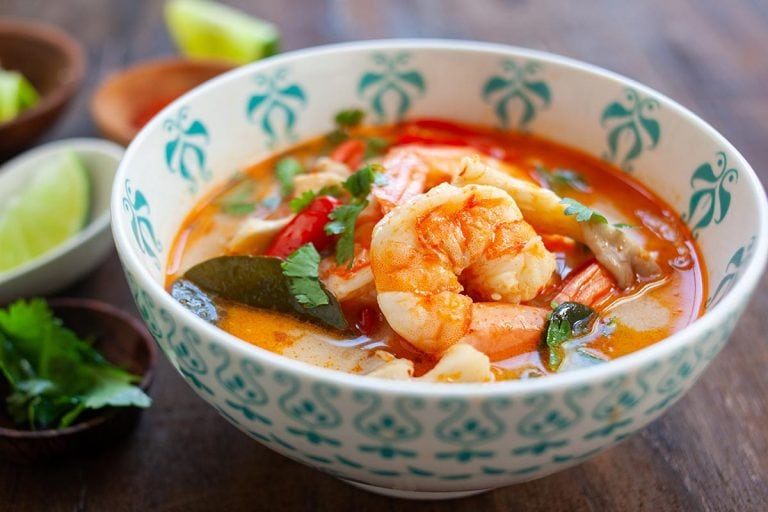

back to main page
Braised Pork Belly in Soy Sauce

The taste is complex, sophisticated, addictive, and utterly delectable.
INGREDIENTS
- 1 lb. (0.4 kg) pork belly, cut into small pieces
- 4 cups water
- 1 head garlic, lightly pounded with the back of a cleaver
- 1 tablespoon white peppercorn, smashed and cracked
- 5 hard-boiled eggs
- 8 oz. (226 g) fried tofu/bean curd
- 4 tablespoons soy sauce
- 3 tablespoons sweet soy sauce, kecap manis
- 1-2 tablespoons dark soy sauce, or until it reaches your desired color
- Salt to taste
INSTRUCTIONS
- Heat up a pot or preferably a big clay pot with 4 cups of water. Bring it to boil and then add in the garlic, pork belly, and cracked peppercorns.
- Bring the pork belly to boil before adding the hard-boiled eggs, fried tofu, soy sauce, sweet soy sauce and dark soy sauce.
- Lower the heat to medium and braise the pork for 30 minutes or so until the pork belly is is cooked through and become tender. Add salt to taste. Continue to simmer on the lowest heat for another 15-20 minutes. Dish out and serve hot with steamed white rice.